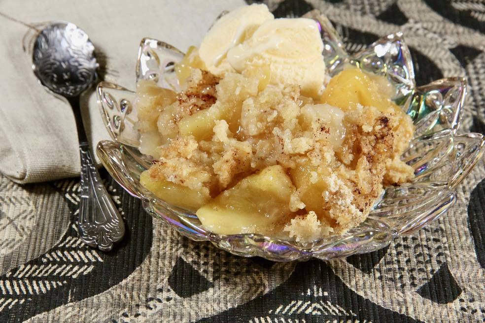

Nana's Apple Crumble

Description
A family favorite, this apple crumble was originally my grandmother
Hazel's recipe which my mom made on a regular basis. She would make two at
a time to take to sick or shut-in friends, or to potlucks. There is never
any left. Serve warm with French vanilla yogurt.
Ingredients
- 7 large Cortland apples - peeled, cored, and sliced
- 1 cup white sugar
- 1 tablespoon ground cinnamon, or more to taste
Topping:
- 1 cup all-purpose flour
- ¼ cup brown sugar
- ⅓ cup unsalted butter, cubed
Steps
Preheat the oven to 350 degrees F (175 degrees C).
Spread apples in an even layer in a deep dish pie plate or 8-inch square
glass casserole dish. Cover with white sugar, then top with cinnamon.
Combine flour and brown sugar for topping in a bowl. Add butter and cut
in with a pastry blender. Spread topping evenly over apple mixture and
pat down.
Bake in the preheated oven until apple mixture is bubbling and topping
is browned, about 55 minutes.